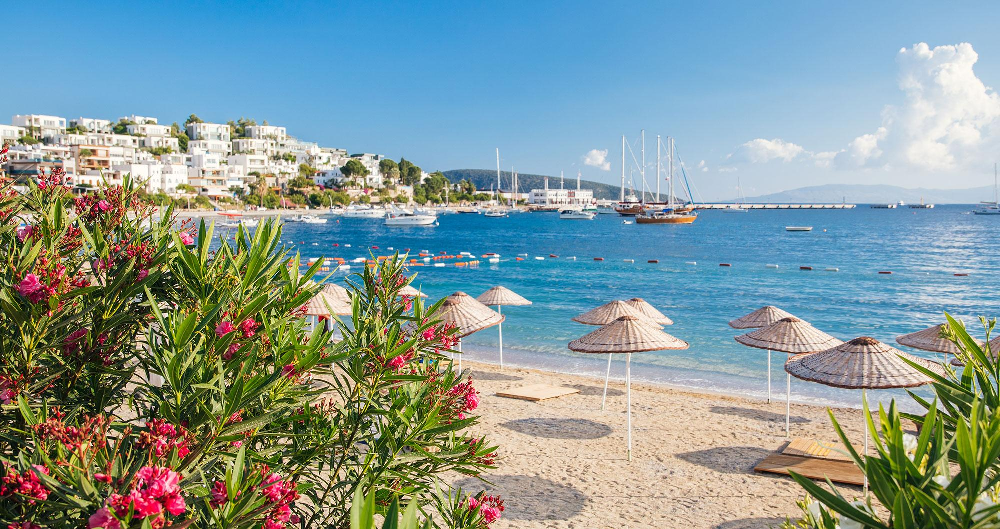
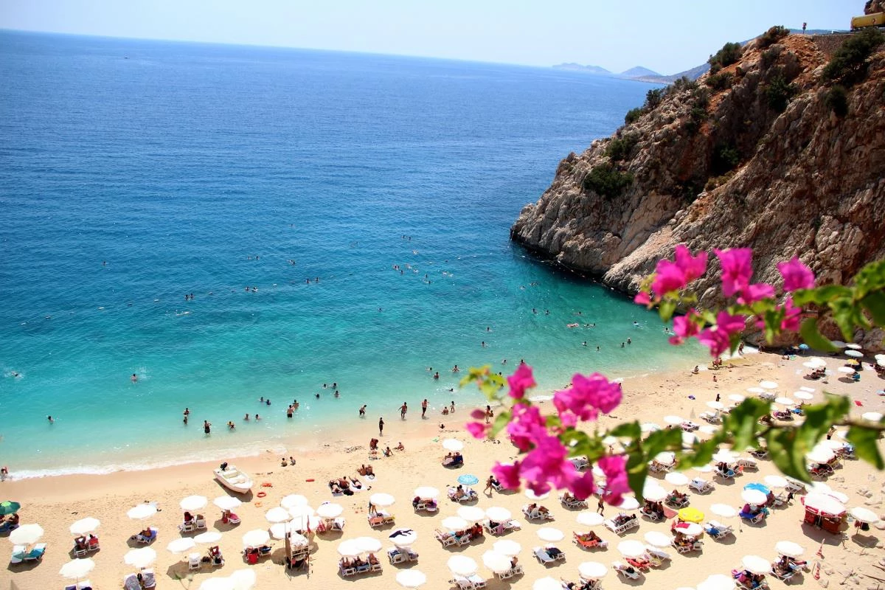

YAZ TATİLLERİ
Kış Tatillerine Git-
Bodrum Y RESORT
- Bilgi & Rezervasyon telefon aç

-
Alaçatı Y RESORT
- Bilgi & Rezervasyon telefon aç
-
Antalya Y RESORT
- Bilgi & Rezervasyon telefon aç

Ege Denizi’nin göz alıcı mavisinin muhteşem yeşiliyle buluştuğu Bodrum Y RESORT, şehrin karmaşasından uzaklaşıp huzuru ve eğlenceyi bir arada yaşayacağınız unutulmaz bir tatil sunuyor.
Ferah odaları ile konforlu bir konaklama deneyimi yaşayacağınız Y RESORT sunduğu zengin olanaklar ile her yaştan misafire hitap ediyor. Mavi Bayraklı denizi, özel kum plajı, eşsiz bir lezzet deneyimi sunan açık büfesi, restoranları, göz kamaştırıcı barları, ister çocuklarınızla isterseniz yalnız katılabileceğiniz eğlenceli aktiviteleri ve Ultra Her Şey Dahil konsepti ile Bodrum Y RESORT, tatilinizin her anına güzellik katmak için sizi bekliyor

Alaçatı Y RESORT, Mavi Bayraklı ve eşsiz bir sahile sahip konumuyla dinamik Alaçatı hayatını lüks standartlarla birleştirerek sizlere benzersiz bir Alaçatı tatil deneyimi sunuyor
102 odası ve 65 villası ile oda & kahvaltı ve her şey dahil konseptlerinde, termal suları, kapalı havuzu, VIP alanları ve çeşitli masaj seçenekleriyle sizleri şımartmayı bekliyor.
AKDENİZ’İN BERRAK SULARI, İNCE KUMU VE TARİHİ DOKUSUYLA BÜYÜLÜ BİR TATİL CENNETİ…
Antalya Y RESORT,size kusursuz bir tatil yaşatmak için tüm imkanları sunuyor. İnce kumu, tertemiz mavi bayraklı plajı, eğlence dolu havuzları ve çocuklarınız için düşünülmüş sınırsız aktiviteleri ile tatiliniz boyunca eğlencenin, konforun ve huzurun tadına varacaksınız.